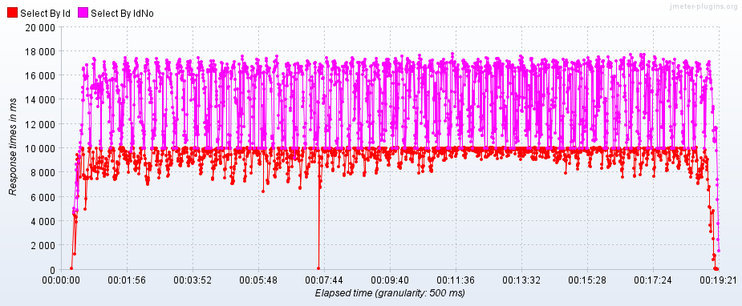
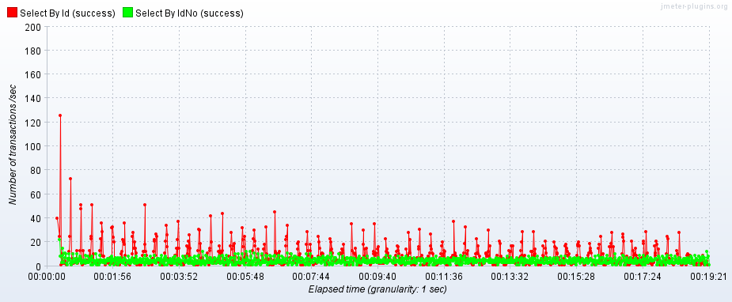

MySQL数据库如何调优及案例分析？
1. 数据库调优
1.1. 为什么需要数据库调优？
数据库调优是为了提高数据库的性能、降低接口的响应时间等。体现在以下几个指标：
- 响应时间（Response Time，RT）
- 每秒事务处理量（Transaction Per Second，TPS）
- 每秒查询处理量（Query Per Second，QPS）
1.2. 如何进行数据库压力测试？
可以使用JMeter工具进行数据库压力测试。下图是使用主键查询和使用全表扫描查询的响应时间（RT）对比，可以看到使用主键查询有更短的响应时间。
{kind=link}

下图是使用主键查询和使用全表扫描查询的每秒事务处理量（TPS）对比，可以看到使用主键查询有更高的每秒事务处理量。
{kind=link}

1.3. 数据库调优的手段有哪些？
数据库调优有以下几种手段：
- 数据库层面：
- 修改数据库的配置，如设置合适的连接数、提高缓冲区的大小、开启慢查询日志等。
- 采用高可用方案、提升硬件配置。
- 表层面：
- 为表字段选择合适的类型。
- 创建合适的索引。
- 适当冗余字段，减少连接查询。
- SQL语句层面：
- 查看SQL语句的执行计划，优化SQL语句，避免全表扫描和索引失效。
- 优化SQL语句，如LIMIT优化、子查询优化、小表驱动大表等。
1.4. 数据库出现性能问题时如何排查？
- 开启慢查询日志，定位查询慢的SQL语句；
- 使用
EXPLAIN命令看SQL语句的执行计划； - 优化SQL语句或者创建合适的索引。
2. 执行计划
2.1. 如何查看SQL语句的执行计划？
可以通过EXPLAIN命令来查看SQL语句的执行计划，如下图：
mysql> explain select * from user where id = 1;
+----+-------------+-------+------------+-------+---------------+---------+---------+-------+------+----------+-------+
| id | select_type | table | partitions | type | possible_keys | key | key_len | ref | rows | filtered | Extra |
+----+-------------+-------+------------+-------+---------------+---------+---------+-------+------+----------+-------+
| 1 | SIMPLE | user | NULL | const | PRIMARY | PRIMARY | 8 | const | 1 | 100.00 | NULL |
+----+-------------+-------+------------+-------+---------------+---------+---------+-------+------+----------+-------+
1 row in set, 1 warning (0.00 sec)输出结果中包含以下要素。
id：查询标识号。select_type：查询类型。table：表。partitions：分区信息。type：连接类型。possible_keys：可能用到的索引。key：使用的索引。key_len：使用的索引的长度。ref：关联的索引列。rows：预估扫描行数。filtered：过滤百分比。Extra：额外信息。
2.2. select_type
查询类型select_type有以下几种：
SIMPLE：简单查询（不包括联合查询或子查询）。mysql> explain select * from user where id = 1; +----+-------------+-------+------------+-------+---------------+---------+---------+-------+------+----------+-------+ | id | select_type | table | partitions | type | possible_keys | key | key_len | ref | rows | filtered | Extra | +----+-------------+-------+------------+-------+---------------+---------+---------+-------+------+----------+-------+ | 1 | SIMPLE | user | NULL | const | PRIMARY | PRIMARY | 8 | const | 1 | 100.00 | NULL | +----+-------------+-------+------------+-------+---------------+---------+---------+-------+------+----------+-------+ 1 row in set, 1 warning (0.00 sec)PRIMARY：复杂查询最外层的查询。UNION：联合查询。UNION RESULT：联合查询的结果。mysql> explain select * from user a where id = 1 union select * from user b where balance > 10; +----+--------------+------------+------------+-------+---------------+---------+---------+-------+--------+----------+-----------------+ | id | select_type | table | partitions | type | possible_keys | key | key_len | ref | rows | filtered | Extra | +----+--------------+------------+------------+-------+---------------+---------+---------+-------+--------+----------+-----------------+ | 1 | PRIMARY | a | NULL | const | PRIMARY | PRIMARY | 8 | const | 1 | 100.00 | NULL | | 2 | UNION | b | NULL | ALL | NULL | NULL | NULL | NULL | 985889 | 33.33 | Using where | | 3 | UNION RESULT | <union1,2> | NULL | ALL | NULL | NULL | NULL | NULL | NULL | NULL | Using temporary | +----+--------------+------------+------------+-------+---------------+---------+---------+-------+--------+----------+-----------------+ 3 rows in set, 1 warning (0.00 sec)SUBQUERY：简单子查询。mysql> explain select a.balance, (select max(balance) as max_balance from user) from user a where id = 1; +----+-------------+-------+------------+-------+---------------+---------+---------+-------+--------+----------+-------+ | id | select_type | table | partitions | type | possible_keys | key | key_len | ref | rows | filtered | Extra | +----+-------------+-------+------------+-------+---------------+---------+---------+-------+--------+----------+-------+ | 1 | PRIMARY | a | NULL | const | PRIMARY | PRIMARY | 8 | const | 1 | 100.00 | NULL | | 2 | SUBQUERY | user | NULL | ALL | NULL | NULL | NULL | NULL | 985889 | 100.00 | NULL | +----+-------------+-------+------------+-------+---------------+---------+---------+-------+--------+----------+-------+ 2 rows in set, 1 warning (0.00 sec)DERIVED：派生表。mysql> explain select t.id from (select * from user where id = 1 union select * from user where balance > 10) t; +----+--------------+------------+------------+-------+---------------+---------+---------+-------+--------+----------+-----------------+ | id | select_type | table | partitions | type | possible_keys | key | key_len | ref | rows | filtered | Extra | +----+--------------+------------+------------+-------+---------------+---------+---------+-------+--------+----------+-----------------+ | 1 | PRIMARY | <derived2> | NULL | ALL | NULL | NULL | NULL | NULL | 328597 | 100.00 | NULL | | 2 | DERIVED | user | NULL | const | PRIMARY | PRIMARY | 8 | const | 1 | 100.00 | NULL | | 3 | UNION | user | NULL | ALL | NULL | NULL | NULL | NULL | 985889 | 33.33 | Using where | | 4 | UNION RESULT | <union2,3> | NULL | ALL | NULL | NULL | NULL | NULL | NULL | NULL | Using temporary | +----+--------------+------------+------------+-------+---------------+---------+---------+-------+--------+----------+-----------------+ 4 rows in set, 1 warning (0.01 sec)DEPENDENT UNION：依赖联合查询。mysql> explain select * from user t where t.id in (select a.id from user a where a.id = 1 union select min(b.id) from user b where b.balance > t.balance); +----+--------------------+------------+------------+-------+---------------+---------+---------+-------+--------+----------+-----------------+ | id | select_type | table | partitions | type | possible_keys | key | key_len | ref | rows | filtered | Extra | +----+--------------------+------------+------------+-------+---------------+---------+---------+-------+--------+----------+-----------------+ | 1 | PRIMARY | t | NULL | ALL | NULL | NULL | NULL | NULL | 985889 | 100.00 | Using where | | 2 | DEPENDENT SUBQUERY | a | NULL | const | PRIMARY | PRIMARY | 8 | const | 1 | 100.00 | Using index | | 3 | DEPENDENT UNION | b | NULL | ALL | NULL | NULL | NULL | NULL | 985889 | 33.33 | Using where | | 4 | UNION RESULT | <union2,3> | NULL | ALL | NULL | NULL | NULL | NULL | NULL | NULL | Using temporary | +----+--------------------+------------+------------+-------+---------------+---------+---------+-------+--------+----------+-----------------+ 4 rows in set, 2 warnings (0.00 sec)DEPENDENT SUBQUERY：依赖子查询。mysql> explain select a.id, (select count(b.id) from user b where b.balance > a.balance) from user a where id = 1; +----+--------------------+-------+------------+-------+---------------+---------+---------+-------+--------+----------+-------------+ | id | select_type | table | partitions | type | possible_keys | key | key_len | ref | rows | filtered | Extra | +----+--------------------+-------+------------+-------+---------------+---------+---------+-------+--------+----------+-------------+ | 1 | PRIMARY | a | NULL | const | PRIMARY | PRIMARY | 8 | const | 1 | 100.00 | NULL | | 2 | DEPENDENT SUBQUERY | b | NULL | ALL | NULL | NULL | NULL | NULL | 985889 | 33.33 | Using where | +----+--------------------+-------+------------+-------+---------------+---------+---------+-------+--------+----------+-------------+ 2 rows in set, 2 warnings (0.00 sec)
2.3. type
连接类型type有以下几种类型：
system：const：使用唯一索引或主键索引等值查询。
mysql> explain select * from user where id = 1;
+----+-------------+-------+------------+-------+---------------+---------+---------+-------+------+----------+-------+
| id | select_type | table | partitions | type | possible_keys | key | key_len | ref | rows | filtered | Extra |
+----+-------------+-------+------------+-------+---------------+---------+---------+-------+------+----------+-------+
| 1 | SIMPLE | user | NULL | const | PRIMARY | PRIMARY | 8 | const | 1 | 100.00 | NULL |
+----+-------------+-------+------------+-------+---------------+---------+---------+-------+------+----------+-------+
1 row in set, 1 warning (0.00 sec)eq_ref：使用唯一索引或主键索引作为连接查询的条件。
mysql> explain select a.* from user a, user b where a.id = b.id;
+----+-------------+-------+------------+--------+---------------+---------+---------+-----------+--------+----------+-------------+
| id | select_type | table | partitions | type | possible_keys | key | key_len | ref | rows | filtered | Extra |
+----+-------------+-------+------------+--------+---------------+---------+---------+-----------+--------+----------+-------------+
| 1 | SIMPLE | a | NULL | ALL | PRIMARY | NULL | NULL | NULL | 985889 | 100.00 | NULL |
| 1 | SIMPLE | b | NULL | eq_ref | PRIMARY | PRIMARY | 8 | test.a.id | 1 | 100.00 | Using index |
+----+-------------+-------+------------+--------+---------------+---------+---------+-----------+--------+----------+-------------+
2 rows in set, 1 warning (0.00 sec)ref：使用非唯一索引等值查询。
mysql> explain select * from user where job = '';
+----+-------------+-------+------------+------+---------------+---------+---------+-------+------+----------+-------+
| id | select_type | table | partitions | type | possible_keys | key | key_len | ref | rows | filtered | Extra |
+----+-------------+-------+------------+------+---------------+---------+---------+-------+------+----------+-------+
| 1 | SIMPLE | user | NULL | ref | idx_job | idx_job | 403 | const | 1 | 100.00 | NULL |
+----+-------------+-------+------------+------+---------------+---------+---------+-------+------+----------+-------+
1 row in set, 1 warning (0.03 sec)ref_or_null：使用唯一索引等值查询，且允许列为空。
mysql> explain select * from user where job = '' or job is null;
+----+-------------+-------+------------+-------------+---------------+---------+---------+-------+------+----------+-----------------------+
| id | select_type | table | partitions | type | possible_keys | key | key_len | ref | rows | filtered | Extra |
+----+-------------+-------+------------+-------------+---------------+---------+---------+-------+------+----------+-----------------------+
| 1 | SIMPLE | user | NULL | ref_or_null | idx_job | idx_job | 403 | const | 2 | 100.00 | Using index condition |
+----+-------------+-------+------------+-------------+---------------+---------+---------+-------+------+----------+-----------------------+
1 row in set, 1 warning (0.01 sec)
range：使用索引范围查询。
mysql> explain select * from user where id > 80;
+----+-------------+-------+------------+-------+---------------+---------+---------+------+--------+----------+-------------+
| id | select_type | table | partitions | type | possible_keys | key | key_len | ref | rows | filtered | Extra |
+----+-------------+-------+------------+-------+---------------+---------+---------+------+--------+----------+-------------+
| 1 | SIMPLE | user | NULL | range | PRIMARY | PRIMARY | 8 | NULL | 492944 | 100.00 | Using where |
+----+-------------+-------+------------+-------+---------------+---------+---------+------+--------+----------+-------------+
1 row in set, 1 warning (0.00 sec)
mysql> explain select * from user where id in (1, 2, 3);
+----+-------------+-------+------------+-------+---------------+---------+---------+------+------+----------+-------------+
| id | select_type | table | partitions | type | possible_keys | key | key_len | ref | rows | filtered | Extra |
+----+-------------+-------+------------+-------+---------------+---------+---------+------+------+----------+-------------+
| 1 | SIMPLE | user | NULL | range | PRIMARY | PRIMARY | 8 | NULL | 3 | 100.00 | Using where |
+----+-------------+-------+------------+-------+---------------+---------+---------+------+------+----------+-------------+
1 row in set, 1 warning (0.00 sec)
mysql> explain select * from user where job like '工%';
+----+-------------+-------+------------+-------+---------------+---------+---------+------+------+----------+-----------------------+
| id | select_type | table | partitions | type | possible_keys | key | key_len | ref | rows | filtered | Extra |
+----+-------------+-------+------------+-------+---------------+---------+---------+------+------+----------+-----------------------+
| 1 | SIMPLE | user | NULL | range | idx_job | idx_job | 403 | NULL | 2016 | 100.00 | Using index condition |
+----+-------------+-------+------------+-------+---------------+---------+---------+------+------+----------+-----------------------+
1 row in set, 1 warning (0.04 sec)index_merge：使用索引合并，同时使用多个索引。
mysql> explain select * from user where id > 10 or job = '工程师';
+----+-------------+-------+------------+-------------+-----------------+-----------------+---------+------+--------+----------+-------------------------------------------+
| id | select_type | table | partitions | type | possible_keys | key | key_len | ref | rows | filtered | Extra |
+----+-------------+-------+------------+-------------+-----------------+-----------------+---------+------+--------+----------+-------------------------------------------+
| 1 | SIMPLE | user | NULL | index_merge | PRIMARY,idx_job | PRIMARY,idx_job | 8,403 | NULL | 492945 | 100.00 | Using union(PRIMARY,idx_job); Using where |
+----+-------------+-------+------------+-------------+-----------------+-----------------+---------+------+--------+----------+-------------------------------------------+
1 row in set, 1 warning (0.03 sec)index：对二级索引树进行扫描。
mysql> explain select job from user;
+----+-------------+-------+------------+-------+---------------+---------+---------+------+--------+----------+-------------+
| id | select_type | table | partitions | type | possible_keys | key | key_len | ref | rows | filtered | Extra |
+----+-------------+-------+------------+-------+---------------+---------+---------+------+--------+----------+-------------+
| 1 | SIMPLE | user | NULL | index | NULL | idx_job | 403 | NULL | 985889 | 100.00 | Using index |
+----+-------------+-------+------------+-------+---------------+---------+---------+------+--------+----------+-------------+
1 row in set, 1 warning (0.00 sec)all：对主键索引树进行全表扫描。
mysql> explain select * from user where job like '%人';
+----+-------------+-------+------------+------+---------------+------+---------+------+--------+----------+-------------+
| id | select_type | table | partitions | type | possible_keys | key | key_len | ref | rows | filtered | Extra |
+----+-------------+-------+------------+------+---------------+------+---------+------+--------+----------+-------------+
| 1 | SIMPLE | user | NULL | ALL | NULL | NULL | NULL | NULL | 985889 | 11.11 | Using where |
+----+-------------+-------+------------+------+---------------+------+---------+------+--------+----------+-------------+
1 row in set, 1 warning (0.01 sec)2.4. Extra
Using filesort：使用文件排序。
mysql> explain select * from user where id > 10 order by balance desc limit 0, 10;
+----+-------------+-------+------------+-------+---------------+---------+---------+------+--------+----------+-----------------------------+
| id | select_type | table | partitions | type | possible_keys | key | key_len | ref | rows | filtered | Extra |
+----+-------------+-------+------------+-------+---------------+---------+---------+------+--------+----------+-----------------------------+
| 1 | SIMPLE | user | NULL | range | PRIMARY | PRIMARY | 8 | NULL | 492944 | 100.00 | Using where; Using filesort |
+----+-------------+-------+------------+-------+---------------+---------+---------+------+--------+----------+-----------------------------+
1 row in set, 1 warning (0.00 sec)Using where：在服务层进行过滤。
mysql> explain select * from user where id > 10 and balance > 2;
+----+-------------+-------+------------+-------+---------------+---------+---------+------+--------+----------+-------------+
| id | select_type | table | partitions | type | possible_keys | key | key_len | ref | rows | filtered | Extra |
+----+-------------+-------+------------+-------+---------------+---------+---------+------+--------+----------+-------------+
| 1 | SIMPLE | user | NULL | range | PRIMARY | PRIMARY | 8 | NULL | 492944 | 33.33 | Using where |
+----+-------------+-------+------------+-------+---------------+---------+---------+------+--------+----------+-------------+
1 row in set, 1 warning (0.00 sec)Using index：使用覆盖索引
mysql> explain select id_no from user where id_no = '123';
+----+-------------+-------+------------+-------+---------------+-----------+---------+------+--------+----------+--------------------------+
| id | select_type | table | partitions | type | possible_keys | key | key_len | ref | rows | filtered | Extra |
+----+-------------+-------+------------+-------+---------------+-----------+---------+------+--------+----------+--------------------------+
| 1 | SIMPLE | user | NULL | index | idx_id_no | idx_id_no | 286 | NULL | 985889 | 10.00 | Using where; Using index |
+----+-------------+-------+------------+-------+---------------+-----------+---------+------+--------+----------+--------------------------+
1 row in set, 1 warning (0.00 sec)Using index condition：使用索引条件下推。
mysql> explain select * from user where country like '中国%' and city = '贵州省';
+----+-------------+-------+------------+-------+------------------+------------------+---------+------+------+----------+-----------------------+
| id | select_type | table | partitions | type | possible_keys | key | key_len | ref | rows | filtered | Extra |
+----+-------------+-------+------------+-------+------------------+------------------+---------+------+------+----------+-----------------------+
| 1 | SIMPLE | user | NULL | range | idx_country_city | idx_country_city | 806 | NULL | 4270 | 10.00 | Using index condition |
+----+-------------+-------+------------+-------+------------------+------------------+---------+------+------+----------+-----------------------+
1 row in set (0.12 sec)Using union：使用索引合并。
mysql> explain select * from user where id > 10 or job = '';
+----+-------------+-------+------------+-------------+-----------------+-----------------+---------+------+--------+----------+-------------------------------------------+
| id | select_type | table | partitions | type | possible_keys | key | key_len | ref | rows | filtered | Extra |
+----+-------------+-------+------------+-------------+-----------------+-----------------+---------+------+--------+----------+-------------------------------------------+
| 1 | SIMPLE | user | NULL | index_merge | PRIMARY,idx_job | PRIMARY,idx_job | 8,403 | NULL | 492945 | 100.00 | Using union(PRIMARY,idx_job); Using where |
+----+-------------+-------+------------+-------------+-----------------+-----------------+---------+------+--------+----------+-------------------------------------------+
1 row in set, 1 warning (0.00 sec)3. 主从复制
3.1. 为什么需要主从复制？
- 用来备份主库，保证数据的安全。
- 支撑读写分离，提高性能。
- 支撑故障转移，提高可用性。
3.2. 主从复制的原理是什么？
由主库的IO线程生成binlog；由从库的IO线程生成中继日志relay log；最后由SQL线程重放SQL。
3.3. 主从复制的策略有哪些？
- 基于Pos主从复制。
- 基于GTID主从复制。
- 一主多从，一主多级从，互为主从。
- 半同步复制机制。
3.4. 如何解决主从复制延迟的问题？
主从复制延迟瓶颈在于磁盘IO和网络IO。
- 修改从数据库的刷盘策略提高性能，降低安全性。
- 多个从数据库，分散从库的读压力。
- 从库使用多线程重放SQL。
4. 读写分离
4.1. 为什么需要读写分离？
提高读的能力，分摊读压力。
4.2. 实现读写分离的工具有哪些？
- atlas。
- MyCat。
- MySQL Proxy。
- MySQL Router。
- Sharding Sphere。
5. 分库分表
5.1. 为何需要分库分表？
突破MySQL单库单表的瓶颈，提高数据库的性能。
5.2. 分库分表的策略有哪些？
切分与聚合。
- 垂直切分
- 垂直分库，按业务分库。
- 垂直分表，大表拆小表。
- 水平切分
- 水平分库。
- 水平分表。
5.3. 数据切片有哪些方法？
- 取模分片。
- 按范围分片。
- 按时间分片。
- 按枚举值分片。
- 自定义分片。
5.4. 分库分表的缺点有哪些？
- 分库，业务间需要通过接口交互。
- 整加事务管理难度。
5.5. 实现分库分表的工具有哪些？
- Sharding Sphere。
- MyCat。
6. 高可用集群
6.1. 为什么需要高可用集群？
完成自动的故障转移，提高系统的可用性。
6.2. 高可用集群方案有哪些问题？
- 主键冲突。
- 热备节点。
- 检查机制完善。
- 数据一致性保证。
6.3. 如何实现自动故障转移？
keepalived